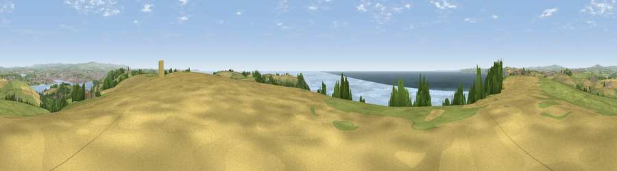

Wiggle Hill
#1250 in England · top 2% of its area beats it · near MillbrookWhere it is
The exact computed spot (SX 41624 50950). Click the marker for map links.
The view, rendered

A 360° render of this exact spot computed from the terrain model, tree cover and land cover — summer colours, afternoon light, calibrated against photographs of famous viewpoints. Real trees, hedges and buildings will differ in detail.
The panorama
Grey silhouette: terrain skyline in each direction (720 bearings, Earth curvature and refraction included). Dashed green: skyline with trees (+15 m) and buildings (+8 m) as obstacles. Blue strip: how far the ground is visible on each bearing.
Where the view opens
Wedge length = distance to the farthest visible ground on that bearing (vegetation-aware). Rings at 10, 25 and 50 km.
What fills the view
39% water · 31% grassland · 16% cropland · 7% woodland · 6% built-up
Angular shares of the visible panorama (visual magnitude), not map area. Landscape diversity 0.60 (0–1 Shannon).
Key numbers
More beautiful places nearby
The staircase of upgrades: each row has a higher view potential than everything closer. Driving times are estimates from straight-line distance, calibrated against real road routing — check an actual route before setting out.
| Place | Direction | Drive | Score |
|---|---|---|---|
| Viewpoint near Millbrook | WNW · 0 km | ~1 min | 79.3 |
| Viewpoint near Freathy | WNW · 1 km | ~3 min | 79.5 |
| Viewpoint near Cawsand | SSE · 2 km | ~5 min | 81.0 |
| Viewpoint near Downderry | WNW · 8 km | ~17 min | 83.5 |
| Viewpoint near Polperro | W · 22 km | ~37 min | 83.7 |
| Pencarrow Head | W · 26 km | ~42 min | 86.0 |
| Viewpoint near Stenalees | W · 42 km | ~62 min | 88.0 |
| Viewpoint near Crackington Haven | NW · 52 km | ~73 min | 88.1 |
50.33713, -4.22687 · source: dobih hill · position refined by local search. Computed location — check access rights before visiting.